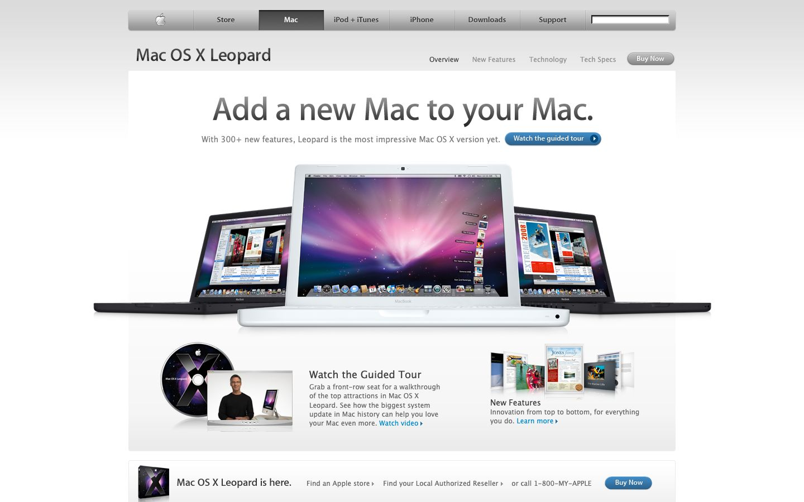

References / Website / 46
Mac OS X Leopard website, 2007
Apple’s Mac OS X Leopard page as archived in November 2007.
- Source
- apple.com/macosx (archived copy)
- Creator
- Apple
- Made
- 2007
- Style
- Frutiger Aero (precursor; agent-proposed, not yet reviewed by a person)
- Moods
- Polished, glossy, cosmic
- Evidence
- Captured from the Internet Archive with
tools/capture.mjs(headless Chrome, 1440 × 900) on 25 September 2026 and inspected. The archived page may lack some images or scripts that the live page had. - Reviewed
- Rights
- Third-party work, stored with credit for commentary. License: unverified. Rights policy
Observed
- A silver gradient navigation bar with a darker selected tab.
- Three MacBooks show the purple-pink aurora wallpaper, standing on a white floor with soft reflections.
- Small blue pill buttons with a gloss highlight (Watch the guided tour, Buy Now).
- A glossy disc with a galaxy image and a presenter photo promote the guided tour.
Why it belongs
Shows the Apple side of the lineage. It is more silver and cosmic than the sky-and-grass Microsoft examples, closer to Aqua than to the later Frutiger Aero imagery.
Measured
Machine-extracted by tools/extract-traits.js on . Full measurement.
- Type families
- Lucida Grande (100%)
- Type scale ratio
- 1.23
- Median radius
- 0 px
- Mean chroma
- 0.07
- Palette
- #777777 40%
- #666666 19%
- #3a3a3a 13%
- #2971a7 12%
- #959595 9%
- #858585 6%
- #0089cf 2%

